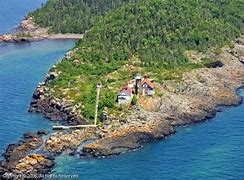

Geography Location Bay of Bengal Coordinates 11.183°N 92.677°E Archipelago Andaman Islands Adjacent to Indian Ocean Area 0.427 km2 (0.165 sq mi)[1] Length 1.35 km (0.839 mi) Width 0.61 km (0.379 mi) Coastline 4 km (2.5 mi) Highest elevation 85 m (279 ft)[2] Administration India District South Andaman Island group Andaman Islands Island sub-group Rutland Archipelago Tehsil Port Blair Tehsil Demographics Population 0 (2011) Additional information Time zone IST (UTC+5:30) PIN 744202[3] Telephone code 031927 [4] ISO code IN-AN-00[5] Official website www.and.nic.in Passage Island or Duncan Island[6] is an uninhabited island of the Andaman Islands. It belongs to the South Andaman administrative district, part of the Indian union territory of Andaman and Nicobar Islands.[7] The island is 53 km (33 mi) south from Port Blair. Geography The island belongs to the Rutland Archipelago and is located between South Cinque Island (6.2 km (4 mi) to the north) and West Sister Island (6.4 km (4 mi) to the southeast). Duncan Passage is just south of this island, separating it from Little Andaman Island.